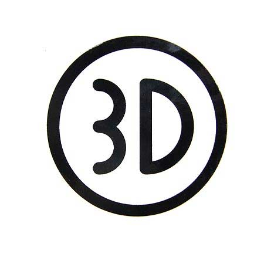

Toggle navigation
Portfolio
About
Projects
Contact
About
Education
The University of Texas at Austin
Aug 2014 – May 2016
Master of Arts in Curriculum and Instruction, College of Education
Major: Learning Technology
GPA: 4.0/4.0
Shanghai Normal University
Sep 2007 – Jun 2010
Master of Arts in English Language and Literature, Foreign Language College
Major: Linguistics
Shanghai Normal University
Sep 2003 – Jun 2007
Bachelor of Arts, Foreign Language College
Major: English Teacher-Training
Minor: Japanese
Skills
Web Development
HTML5
CSS3
JavaScript
Bootstrap3
Jquery
Python
SQL
Flaskr
Related Project
3D Production
PS
Blender
Modo
Captivate
Related Project
Camera Editing
Premiere
Camtasia
Eduis
SQL
Related Project
Experience
Graduate Assistant Web Developer
UT Health Services, The University of Texas at Austin, Austin, TX
Sep 2015 - Present
Design and produce Qualtrics survey tools for collecting data on healthy student organization activities
Implement responsive design to two websites for Campus Health Services Center using HTML/CSS, JavaScript, Bootstrap, JQuery
Summer Intern Production Assistant
Content Team, Tech Lab, Education First (EF), Shanghai, China
June 2015 - Aug 2015
Implemented production requests and requirements for use in mobile app in “School on the Phone” project
Built ten units of language courses in content management system and media systems
Research Assistant, Interface Developer, 3D Design Group Leader
Alien Rescue Team, The University of Texas at Austin, Austin, TX
Aug 2014 - Present
Create a whole Website for a 3D educational game with JavaScript, HTML/CSS and Adobe Dreamweaver
Develop eight 3D objects and characters in Alien Rescue with MODO
Collect data and feedback on Alien Rescue through three-hour interviewing and video shooting
Journalist Assistant and Cameraman (Honor of Excellent Staff 2013)
NNN Japanese Yomiuri TV Foreign Bureau, Shanghai, China
July 2010 - Aug 2014
Assisted in live reporting over one hundred and fifty events in China, Japan, Malaysia and other Southeast Asia countries
Conducted research and formulated over fifty reports on topics of economic concern in China